Hyperloop system
The hyperloop train system is used to submit your analysis in a train to the Grid.
Preconditions
- Have installed in your browser a valid AliEn certificate. If you can access https://alimonitor.cern.ch/hyperloop/ without getting "access denied", then everything is fine.
Concept
The Hyperloop framework is a tool to run and manage analysis trains on AliEn. It is based on the concept of the LEGO train system used during Run 2. It builds on the O2 analysis framework, O2 DPL, MonALISA and LPM. If you are a Run 2 train expert, and you don't have much time, you can just jump to this section: Run 2 LEGO train expert.
In order to run trains on the Grid, the code has to be contained in an AliEn package. Therefore, the train uses the regularly deployed O2 tags. Hyperloop supports Run 3 data and converted Run 2 data.
Hyperloop provides a web interface for users and operators which allows to:
- register train wagons
- configure trains (wagons, input datasets)
- test the wagons and the train in a well-defined environment
- study the test results
- submit the train to the Grid
- study the resource consumption of the train for each wagon
The views available in the Hyperloop framework are:
- My Analyses
- All Analyses
- Dashboard
- Train Submission
- Train Runs
- For a user, the Datasets page displays a read view only of all the datasets available in the system. For a train operator, the Datasets page allows creation, configuration and deletion of datasets.
- For the DPG experts, the DPG Runlists page allows creation, configuration and deletion of runlists. For the users it offers a read only view of all DPG runlists available in the system.
Creating or joining an analysis
The Analyses to which a user belongs to, is defined through a JIRA ticket. In the JIRA page, create an issue by clicking on the button Create, and fill the information with the following parameters:
- In Project select your PWG.
- In Issue Type select Analysis.
- In Summary write the name of your Analysis.
- In Components select your PAG.
- In Run 3 analysis choose
Yes. - In Analyzers select all the users that will be part of this analysis. All the analyzers will have writing permits to all components in the analysis.
- (Optional) In Description give a brief description of the analysis. The rest of the parameters are not relevant for the Hyperloop train system.
After all the parameters have been set, click on Create and your Analysis will be available in the My Analyses and All Analyses page.
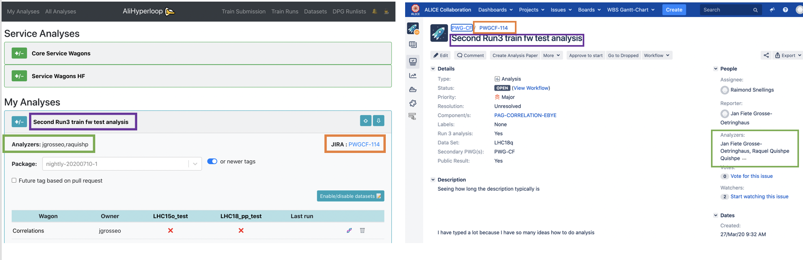
The synchronization from JIRA to the Hyperloop train system can take up to 30 minutes.
My Analyses
- My Analyses is a personalized webpage which displays all the analyses where the user belongs to.
- The analyses display can be expanded/collapsed and reordered with the buttons
✚/-,⇧and⇩, or by dragging and dropping. This configuration is saved per user. - The user can add/remove, configure and enable/disable wagons in this page.
- The user can add/remove datasets per analysis.
- Receiving emails on wagon test failure can be configured per analysis in
Datasets and Settings 📝. It can be set to: none, all analyzers or only user who enabled the wagon.
Service wagons
The Service wagons are wagons which are dependencies to other wagons. They are created by experts, and you can add it as a dependency to your wagon in edit wagon.
- For the users, in the My Analyses page, there is a read only view of the Service Analyses available on the top of the page.
- For the experts, if you need to create Service wagons, you need to have an analysis with the project type O2 Hyperloop Service Wagons (OHSW) which can be created in JIRA. Once the analysis is created, you can add a new wagon inside of the analysis available in My Analyses.
Adding and configuring a wagon to an analysis
1. Adding a new wagon:
Using the My Analyses page, inside of the Analysis you want to add the wagon to, click on ✚ Add new wagon.
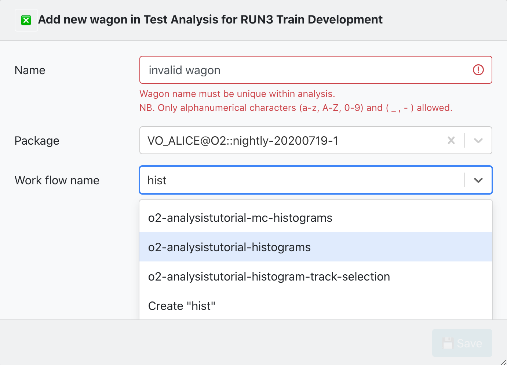
There are 2 parameters required to create a new wagon:
- Name: The newWagonName has to be unique within an Analysis, and it only accepts alphanumerical characters, no spaces.
- Work flow name: You can either select from a list of workflow_Names from an existing package tag. Or create a workflow_Name which belongs to a pull request.
By clicking on 💾 Save the wagon will be added, and you will be redirected to Edit Wagon where you can modify the wagon's configuration.
2. Cloning a wagon:
- Using the My Analyses page, click on the button
🧬to clone a wagon.
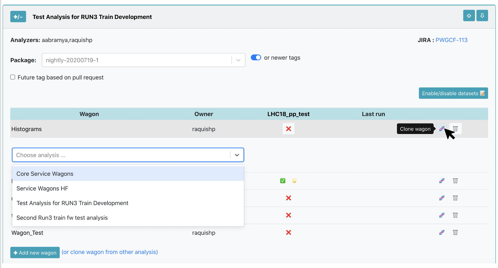
A list of Analyses you belong to will be displayed. You have to select the Analysis where you want to clone the Wagon to, and name the NewWagon (the wagon name has to be unique within Analysis). By clicking on 🧬 Clone, a new wagon will be added with the same configuration as the Wagon including subwagons and derived data.
- Using the All Analyses page:
You can get to the All Analyses page by using the main menu, or by the link in My Analyses page: (or clone wagon from other analysis). In the All Analyses page, a read only view of all the analyses available in the system will be displayed. Browse and click on the Analysis you want to clone the wagon from, and follow the procedure mentioned above.
3. Edit a wagon:
- You can edit a wagon by clicking on the Wagon name in the My Analyses page. There are different tabs: Wagon settings, Configuration, Testing Statistics.
- In Wagon settings you can modify the wagon name, work flow name, and select wagon's dependencies. The dependencies offered are wagons from the same Analysis or from Service wagons.
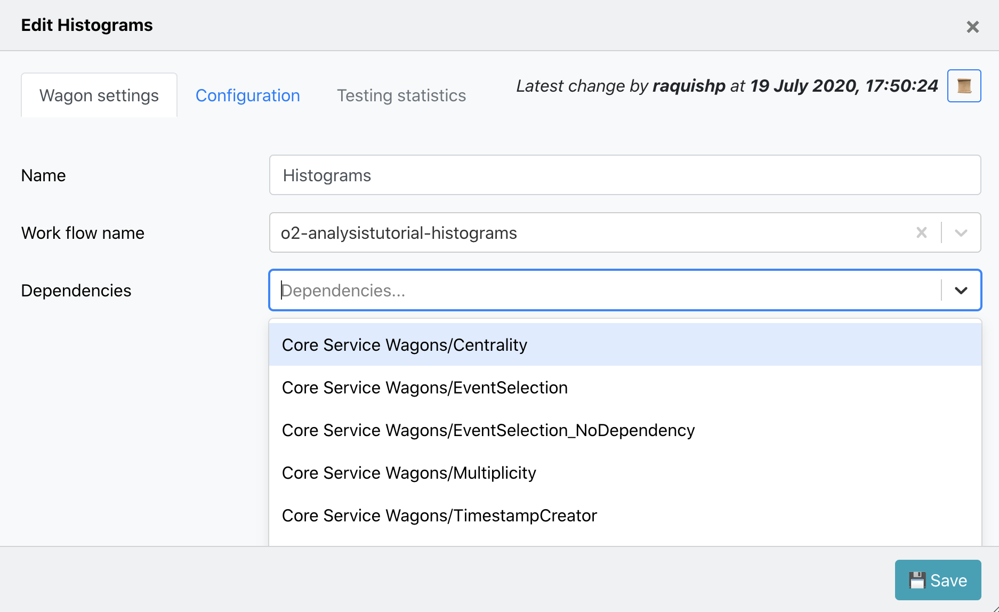
- In Configuration the wagon configuration corresponding to the workflow will be available in the Base. The configuration is divided per Task, hence if you need to add a new parameter, you will need add it in the following order: task, parameter and value.
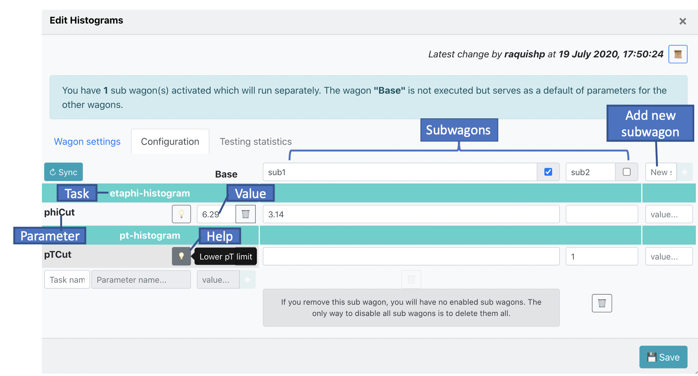
-
If you need to run the same workflow, but modify one (or more) of the parameter's value, you can use a subwagon instead of creating a new wagon. In order to create a subwagon, type the name of the new subwagon, the name has to be unique within the wagon, and type the value of at least one parameter in the configuration. The configuration of a subwagon will be kept the same as the Base and overwrite the parameters that are different. When there are subwagons activated, the wagon's Base will not run. NOTE: subwagon submission is at present not yet supported, but will come soon.
-
In order to update the base and subwagon configuration with the latest version of the workflow, click on the button
↻ syncin Configuration. By synchronizing the configuration, the parameters which no longer belong to the workflow will be removed, and the values of the wagon's Base will be updated as well if they have not been modified by the user. -
In Derived Data the tables which are produced by the task are displayed. If activated, these are saved to the output if the train is run as a derived data production.
-
In order to update the derived data configuration with the latest version of the workflow, click on the button
↻ syncin Derived data. By synchronizing the derived data, the tables which no longer belong to the workflow will be removed, and the values of the tables will be updated.
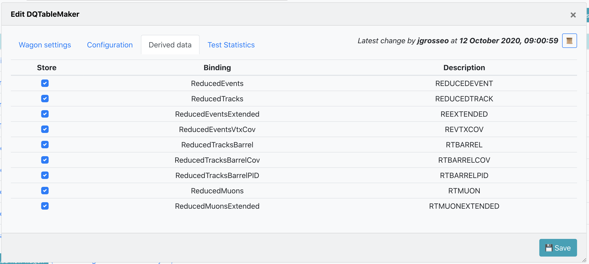
- Test Statistics contains three graphs that display different metrics following the tests this wagon was part of. The first graph plots the PSS Memory corresponding to each test run. The second one diplays the CPU Time, Wall time and Throughput along the test runs for this wagon. Finally, the third graph shows the Output size at each test run.
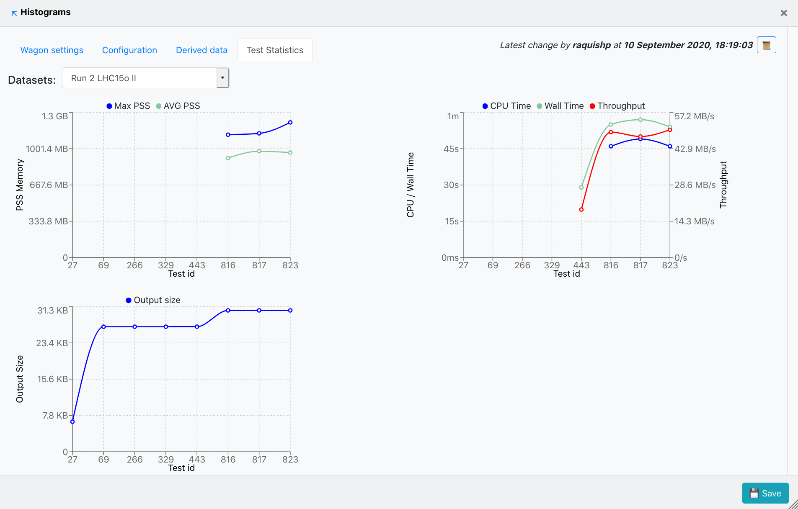
- Depending on the datasets this wagon is using, the user is able to choose the Dataset on which the metrics mentioned above are plotted, from the upper-left dropdown. In case no tests were run on the chosen dataset, a message will appear stating this.
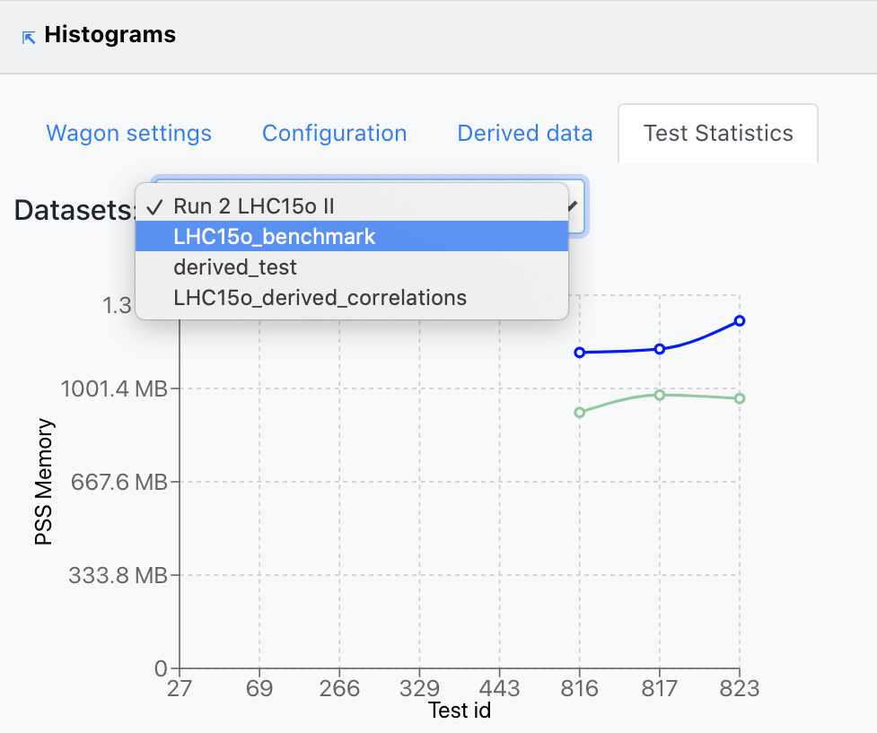
- By clicking on the bullets representing the metric value at any of the test runs plotted, the user will open a new tab with the wagon test page. Likewise, in the upper-left corner, there is a link to the Wagon History page, which will display the state evolution of the wagon.
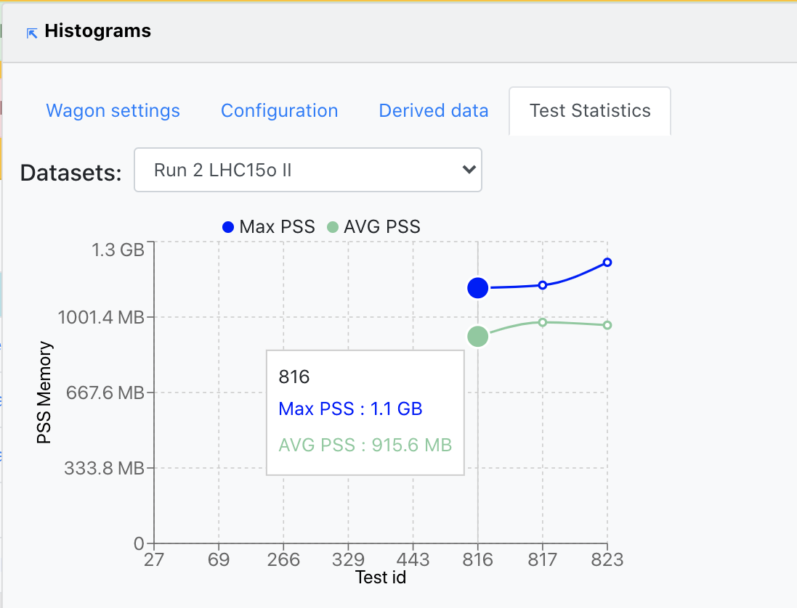
4. Wagon History:
- In the Wagon History page, there is a summary of the wagon's state from the creation until the last update. By clicking on the + symbol, one can expand the information, showing the subwagons' details and the derived data at each timestamp.
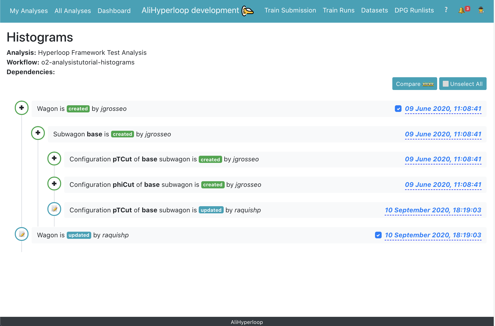
- On the right side of the page, the user can select two timestamps in order to compare the state of the wagon between the two by clicking Compare. This will lead to Compare Wagons page. You can cancel your current selection by clicking Unselect all.
5. Compare two wagons:
-
In the Compare Wagons view, we can analyse the state of a wagon at two different timestamps. The Wagon settings tab shows the changes regarding the name, workflow and dependencies and/or the common features between the two. By clicking on one of the dependencies, a new tab will open showing the comparison between the same two timestamps for the wagon clicked.
-
The Derived data tab reflects the differences concerning the derived data at the two timestamps.
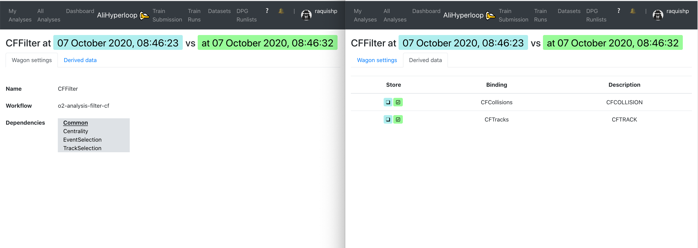
Enabling datasets
1. Using the My Analyses page:
- Inside of an analysis, click on the button
Datasets and Settings 📝.
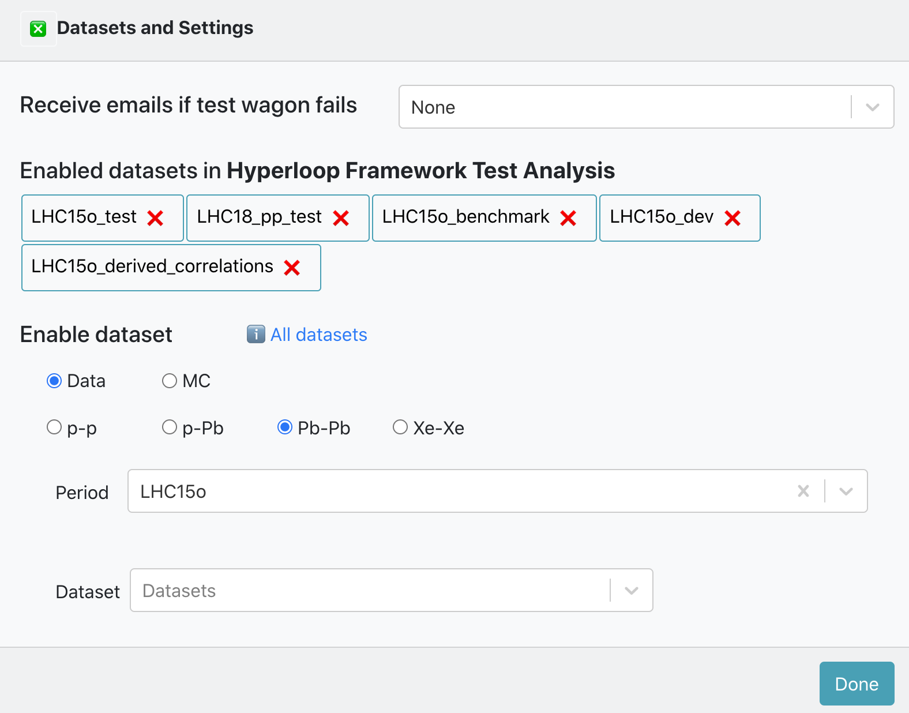
- There is a list of Enabled datasets in Analysis. You can disable a dataset for that analysis by clicking on the button
❌. - Inside of Enable dataset you can search for an active dataset by filtering by data type, collision system, anchor and period. And add it to your analysis by clicking on the button
✚ Add to analysis. Or you can click the buttonℹ️ All datasetsto be redirected to the Datasets page.
2. Using the Datasets page:
- You can browse and click on the Dataset you want to add to your analysis.
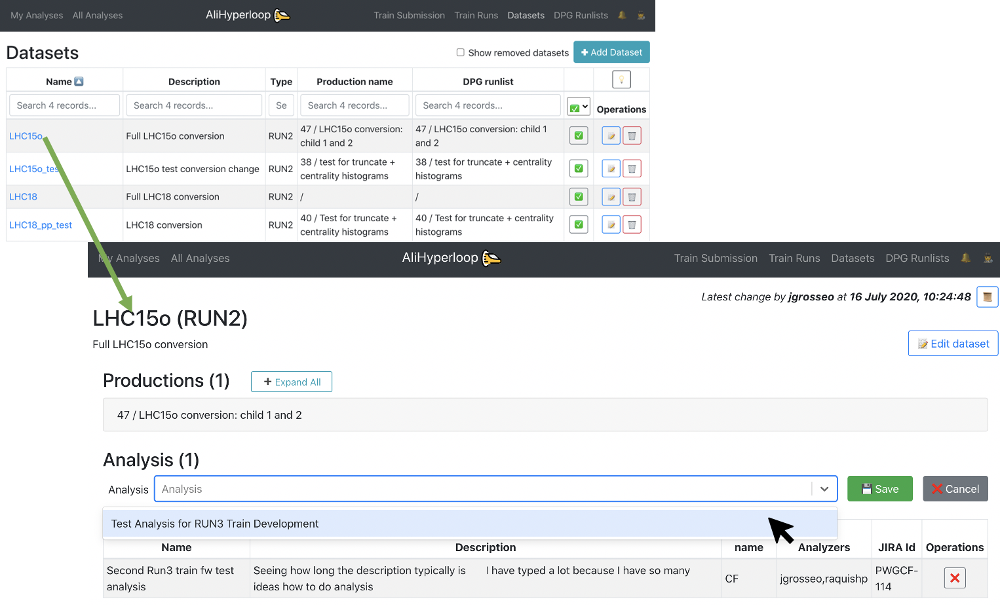
- Inside of the Dataset view page, click on the button
✚ Add dataset to analysis. It will display a list of all the analyses you belong to. Select the Analysis you want to add the dataset to, and click on💾 Save.
Enabling a wagon
You can enable a wagon in the My Analyses page. Inside of the Analysis there are the datasets available for that analysis, or you can enable/disable datasets. There are 3 options for enabling a wagon:
- Latest package tag: You can select a package tag with the option
or newer. This means that your wagon can be tested and composed in a train with the package tag chosen or the latest package tag available. - Fixed package tag: You can select a package tag and disable the option
or newer. This means that your wagon can be tested and composed in a train with that package tag only. - Pull request: Select the option
☑️ Future tag based on pull request. There will be a list of the latest merged/unmerger pull requests available with their corresponding description. By choosing a pull request, your wagon will be tested as soon as the pull request is merged in a package tag. Then your wagon will be composed in a train with the latest package tag available.
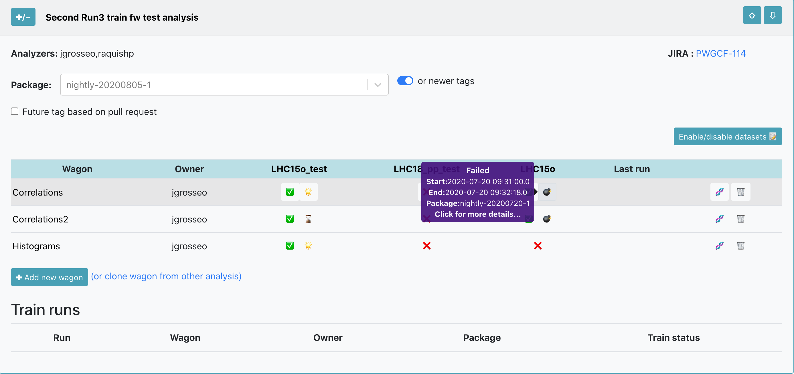
After choosing the package tag to be used, click on the button ❌ to enable your wagon in a dataset, the icon will change from ❌ to ✅. If you hover over ✅ you can see the information about the enabled wagon: package tag, time and username. If you need to disable a wagon in a dataset, click on the button ✅. After enabled, the wagon will be automatically tested and you can follow the progress of the test on the button next to ✅: ⌛️ queued,⏳ ongoing,🌟 done, ❗️ warning and 💣 failed.
If a wagon has dependencies, there is no need to enable the dependencies as well. The wagon's dependencies will be automatically tested by the system as well.
Wagon tests
- The wagon test can be accessed in the My Analyses page by clicking on the buttons:
⏳,🌟,❗️or💣. - If the TEST_ID is known, it can be directly accessed using the url https://alimonitor.cern.ch/hyperloop/wagon-test/TEST_ID.
- Inside of a wagon test, the test configuration, results, graphs and statistics are displayed.
- The test output can be accessed by clicking on the buttons:
⏳,🌟,❗️or💣, or the link(test output) - Whenever a wagon configuration is changed, if there are enabled wagons (including wagons that depend on it), then the test is automatically reset and a new test is launched. However, if the enabled wagon was already composed in a train, the train will run with the wagons and dataset configuration of the time at which the train was created.
Relation of pull requests
When creating or enabling wagons, you can use a pull request instead of a package tag. By doing this, you don't need to wait until your code has been merged and released in a package tag.
- Adding a new wagon: You can create a wagon with your unmerged or unreleased workflow. If the workflow is not available, add manually the configuration of the wagon, and subwagons if needed. You can synchronize the wagon's configuration once the package tag that includes your pull request has been released.
- Enabling a wagon in a dataset: If you need to enable your wagon with workflow that is unmerged or unreleased, use a
Future tag based on pull request. There is a list of the latest merged and unmerged pull requests available in the system, you can see the pull request number and description. Select the pull request tag and enable the wagon in a dataset. By doing this, the wagon will be queued to test, and the test will begin once the pull request has been merged to a package tag, and the package tag is released. And then, if the test is successful, it'll be composed in a train with the latest package tag available.
All Analyses
- There is a read only view of all analyses available in the system.
- Wagons from any analysis available in the system can be cloned
🧬to a user's analysis.
Dashboard
- The Dashboard displays the current state of the system by showing a number of status parameters related to wagons, trains and grid jobs. Additionally, the user can see the summary of the last week: average completion time, number of finished trains and wagon tests.
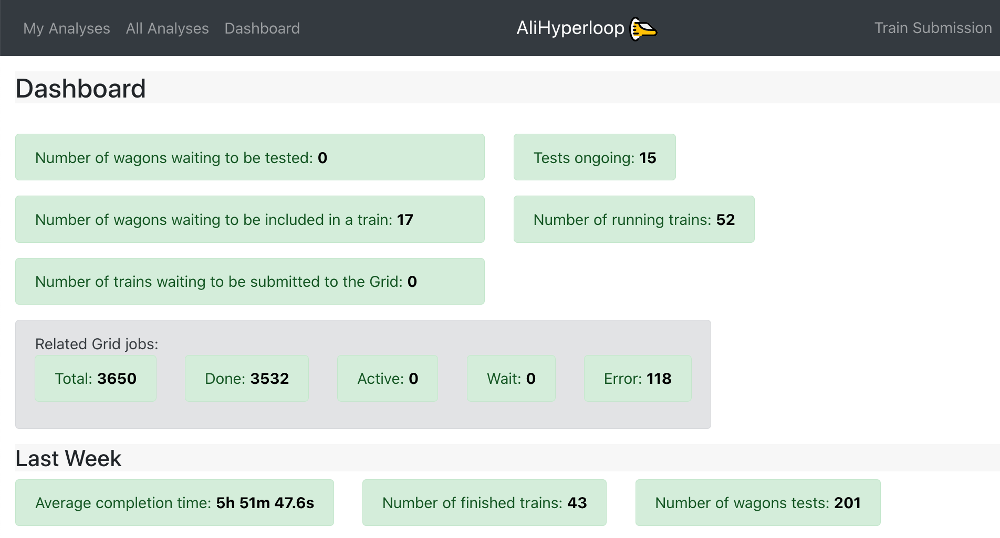
- By clicking the number of wagons waiting to be included in a train, the user can directly open the Train Submission. Similarly, a link to the Train Runs is available by clicking the number of trains to be submitted to the grid, the number of running tests, or the number of finished trains.
Train Submission
- For a user, the Train Submission page displays a read view only of datasets which have enabled wagons.
- For a train operator, the Train Submission page displays only datasets which have enabled wagons, and allows train composition, as well as submitting, modifying and killing a train.
Train Composition
- Trains are composed per dataset. Only wagons which have a test status of success
🌟or warning❗️can be composed in a train. - By default, wagons that were enabled at most one week ago are shown. In order to display all enabled wagons, click on
offin the Enabled column. - In order to compose a train, click
☑️in the Compose column. The package tag will be automatically chosen, and other wagons that can be included in the train run are signalized with 🟢, and the ones which are not compatible with 🔴. All wagons that are compatible can be automatically chosen by clicking on✅ Select all compatible wagons, or by selecting them one by one. - If a wagon has Derived data tables activated, it will be signalized with the icon 🗂️ in the Test status column.
☑️ slow train: If enabled, the express train features are disabled. This means that you may have up to 2% more jobs which finish but the train run may take several days more.☑️ derived data: If enabled, this train produces derived data to be used for further analysis. The results will not be merged and can be used as input for future train runs.☑️ automatic submission: If enabled will submit the train automatically after the test is done and succeds🌟.Target: Sets the facility/cores where the train will be run.- Finally, after defining the configuration, click on
Compose 🚂to compose a train. After composing a train run, the wagons selected cannot be selected for a different train run unless the current train run is decomposed. After the train run is submitted, the wagons will be disabled. - If a user changes a configuration between train composition and submission, the new configuration is not taken into account. The train runs with the wagons and dataset configuration corresponding to the time at which it was created.
- The train will be automatically tested, and its progress can be followed in the Train Runs table, or in the Train Runs page by clicking on the TRAIN_ID link.
Train Runs
- For a user, the Train Runs page displays a read view only of all train runs available in the system.
- For a train operator, the Train Runs page displays all trains available in the system, and allows submitting, modifying and killing a train.
- The train run detail can be accessed by clicking on the TRAIN_ID, or with the url https://alimonitor.cern.ch/hyperloop/train-run/TRAIN_ID.
- The actions allowed in a train run:
- Adding a comment.
- Decomposing a train run by clicking on
Decompose ☠️. When decomposing a train run, the wagons in it will be allowed to be composed in a new train run. - Submitting a train run. Only train runs which test status is success
🌟or warning❗️can be submitted. By default, the train run is submitted to the Grid - single core, but a different target can be chosen. To submit a train run, click onSubmit 🚂. - When a dataset has activate final merge, a button
Submit final mergeappears after all the masterjobs are finished successfully. - Killing a train by clicking on
Kill ☠️. - Cloning a train in the tab
Clone. When cloning a train, the wagons and dataset configuration used will be the same as of the original train. Other settings can be changed: package tag, target facility, slow train, derived data, automatic submission.
-
In the Test Graphs tab, the user can plot the available metrics for the specific Train run. By hovering over the graph, the corresponding values are displayed in a dynamic window, stating the value for each participating wagon.
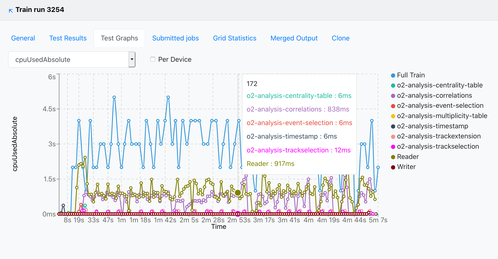
- The metric can be selected from the upper-left dropdown, and the graph will change accordingly.
- The user can choose to plot the metric data per device, by checking the Per Device near the dropdown.
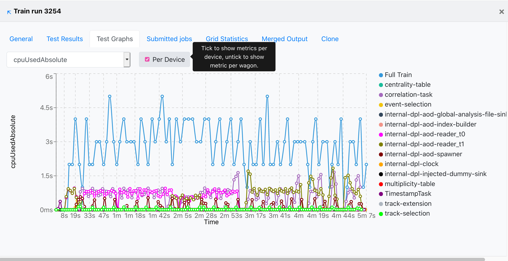
For the Run 2 LEGO train expert. What has changed?
- There are different webpages for users and train operators:
- My Analyses, the user will see only Analyses where the user belongs to, this is defined through JIRA. The user has writing permits to all elements in this webpage.
- All Analyses is a read only view of all the Analyses available in the system. The only action permitted is cloning a wagon.
- Train Submission is a webpage designed for operators. It displays only datasets which have enabled wagons, allowing train composition. Submitting, modifying and killing a train is also allowed.
- Train Runs is a webpage designed for operators. It displays all train runs available in the system. The actions permitted are submitting, modifying and killing a train.
- Datasets, for the users, it is a read only view of all the Datasets available in the system. For the train operators, it allows creation,configuration and deletion of Datasets. The Datasets are directly created from runlists already defined in the DPG Runlists webpage instead of copying from a text file in the twiki page like the LEGO trains.
- DPG Runlists is a webpage designed for the DPG. For the DPG experts, it allows creation, configuration and deletion of runlists, instead of defining them in a twiki page. For the users it offers a read only view of all DPG runlists available in the system.
- Dashboard provides a summary of the current state of the system by displaying a set of status parameters. The user can check information such as the number of ongoing tests, the number running trains and the current grid jobs. Moreover, an overview of the previous week is presented.
- There is a history feature for wagons and datasets. You can access it by clicking on the button
📜available inside of a wagon/dataset view. A detailed view of what has been created/updated/removed from the wagon/dataset is shown, as well as the username and the time when the change was made.
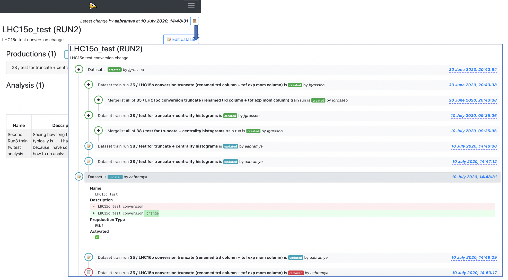
-
There are automated notifications. These notifications are created per user, and display changes made to tools, like Datasets, that are being used by the user. They are displayed per Analysis in the My Analyses page, or globally in the button
🔔which can be found on the top menu. -
There is an impersonation feature
🕵that can be used by experts in order to help users if they have a problem with the UI. -
When enabling a wagon in a dataset the user can choose whether to enable it with a fixed package tag, latest package tag or a pull request.
-
After enabling a wagon in a dataset, the wagon is automatically tested, and the user can follow the test status (
⌛️,⏳,❗️,🌟,💣) in the My Analyses page. -
Performance Graphs page allows the user to upload his own local metrics file, and then generate the test graphs specific to that file. You produce a local performanceMetrics.json by running the o2 workflow with the argument –resources-monitoring 2 which, in this example, produces monitoring information every 2 seconds. These are the same type of graphs produced in the Test Graphs tab of the train run. This page can be accessed at: https://alimonitor.cern.ch/hyperloop/performance-graphs.
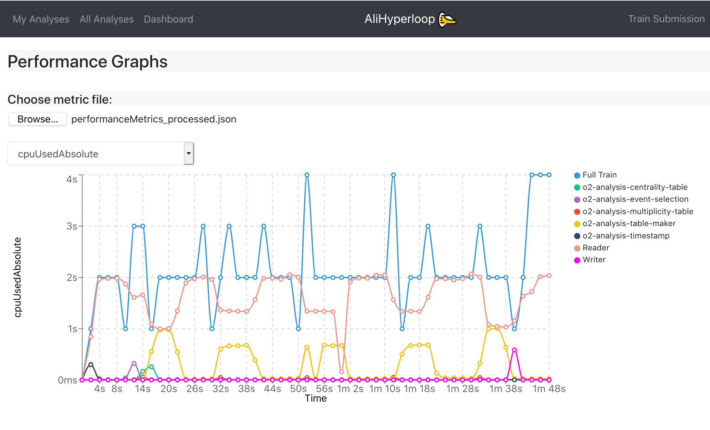